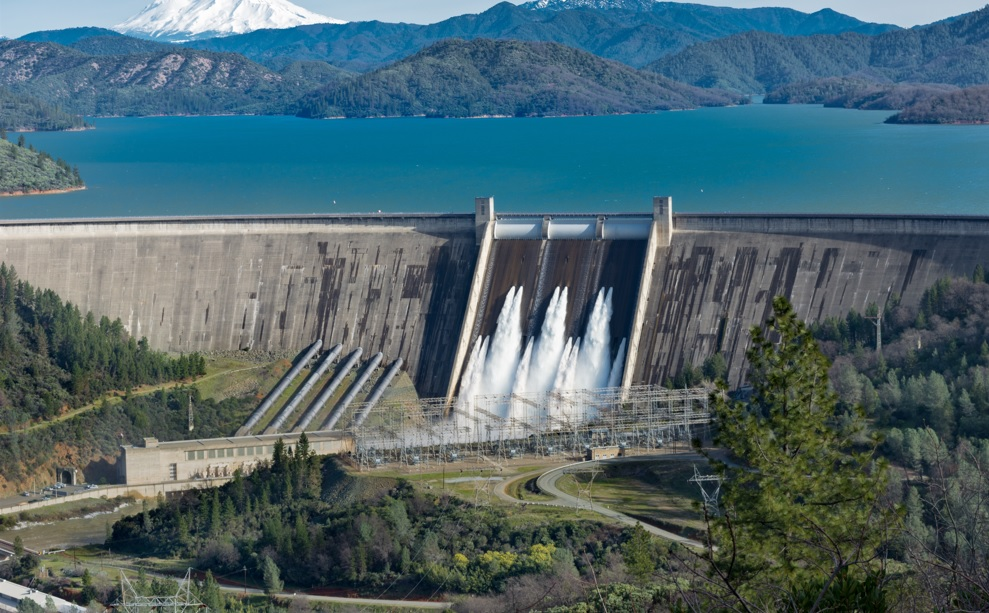

A energia gerada pelas hidrelétricas é resultado da força da água. As usinas hidrelétricas aproveitam a água acumulada nas barragens para acionar as turbinas. Dessa forma, a energia mecânica gerada pela água é convertida em energia elétrica. O processo operacional das hidrelétricas abrange diversos componentes, que vão desde a edificação das barragens, passando pelas casas de força, até as redes de transmissão.
1. É uma fonte sustentável e ecológica;
A principal vantagem da energia hidrelétrica é que seu recurso fundamental, a água, é uma fonte sustentável e ecológica para a produção de eletricidade. Países que possuem vastas bacias hidrográficas e uma geografia adequada para a construção de usinas, como o Brasil, conseguem desenvolver um sistema eficiente de geração e distribuição de energia, é considerada uma fonte limpa, que se renova naturalmente com o ciclo das chuvas.
2. Custo de produção de energia baixo;
A manutenção de uma usina, tanto a médio quanto a longo prazo, é relativamente baixa, o que acaba influenciando no preço da energia para o consumidor. Por outro lado, o custo inicial de instalação é elevado, uma vez que envolve investimentos em equipamentos, na construção de reservatórios, barragens, casas de força e também em estudos ambientais e seus impactos na região.
3. Reaproveitamento da água na irrigação;
A reutilização da água contribui significativamente para o crescimento da agricultura em áreas adequadas, auxiliando pequenos agricultores na geração de renda para várias famílias. Ademais, a água purificada das usinas é fundamental para sustentar o fornecimento de água durante as secas.
4. Não produz gases do efeito estufa;
A geração de eletricidade por meio da energia hidrelétrica também não produz como resíduos gases do efeito estufa, que são responsáveis pela poluição da atmosfera e aumento da temperatura global.
5. Estrutura responsiva e rápida;
A quinta vantagem da energia hidrelétrica é que a estrutura da usina é responsiva e rápida. Quando é preciso aumentar a geração rapidamente, é possível aumentar a vazão de água para gerar mais eletricidade.
1. Influência na flora e a fauna das áreas alagadas;
Dependendo do tamanho da usina, é necessário alagar um grande espaço de terra. Isso interfere diretamente na fauna e na flora do lugar e é uma das desvantagens da energia hidrelétrica.
2. Mudanças climática;
A interrupção do fluxo de água para criar os reservatórios também pode afetar o clima tanto na região quanto nas áreas vizinhas. Por isso, a instalação de uma usina não é um trabalho simples e exige bastante empenho para minimizar essa desvantagem da energia hidrelétrica.
3. Alteração do curso e do nível natural dos rios;
Uma vez que uma grande parte do curso da água é barrada e/ou alterada, acontece um desnivelamento do restante do nível do rio. Essa descompensação é considerada para manter um volume viável e ainda garantir que quando for feita a liberação de água, não cause problemas.
4. Diminuição da geração nos períodos de seca;
Durante as secas, a capacidade de produção de eletricidade das usinas diminui em razão da escassez de água. Em situações de crise hídrica, quando o país enfrenta longos períodos de estiagem, os custos da energia elétrica também sofrem influência.
5. Realocação das populações ribeirinhas e nativas;
Uma das desvantagens da energia hidrelétrica mais delicadas é a realocação das populações ribeirinhas e nativas das áreas que são inundadas para a construção de uma usina. Isso exige que o governo tenha políticas que garanta a qualidade de vida às pessoas afetadas.